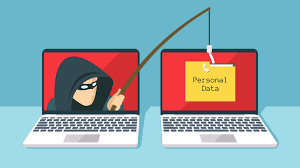
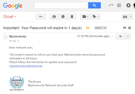
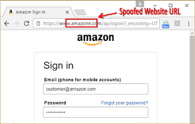
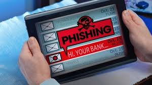
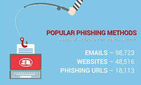

Phishing is the fraudulent attempt to obtain sensitive information or data, such as usernames, passwords and credit card details, by disguising oneself as a trustworthy entity in an electronic communication. Phishing is an example of social engineering techniques used to deceive users. Users are lured by communications purporting to be from trusted parties such as social web sites, auction sites, banks, colleagues/executives, online payment processors or IT administrators.
Phew! Now that is some seriously technical stuff to understand. So how do you know what exactly is phishing. Well, think of it this way, have you ever received any e-mail asking you to update your account credentials by a reputed organization like Amazon, Flipkart or a bank where you might be having an account, or have you received one of those texts saying that you have won a lottery or that to protect your account, you need to change the credentials of your account. This is exactly what the aforementioned text talks about.
Such e-mails or texts tend to direct the user to a malicious website that might look legitimate but unfortunately is not one bit of what it looks like. This is where the user gets illuminized and reveals the credentials or other confidential information which is exactly what the attackers intended.
Phishing is a pretty broad term and encapsulates within it the various types and of this attack and the huge variety of techniques used by the attackers to carry out these attacks. You can check the Types and Techniques pages to get more information about these.
Now the question that comes to most people’s mind is how do we save ourselves from such attacks? Well, there are some practices that can be followed by users to avoid getting caught in these traps and certain points which if kept in mind, can greatly help in preventing falling prey to these attacks. To know about some of these points and other precautionary practices, check out our Safety page.
Check out this video to get a basic understanding of what is phishing and how it affects the users in the cyber world.